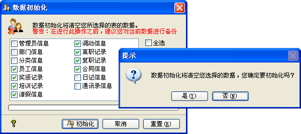
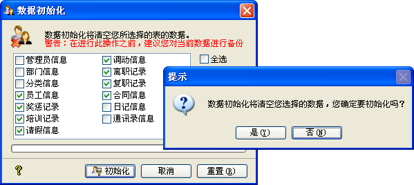

您初次使用秋风人事档案管理系统时，可以用此功能对测试数据进行初始化，系统中有十个可以初始化的数据表，默认初始化员工信息、奖惩记录、培训记录、调动信息、离职记录及复职记录四个，您可自己选择数据需要初始化的数据表。
若是您在使用过程中需要对数据进行初始化，建议您先对数据进行备份操作，以在将来有必要的时间恢复数据。系统提供了数据自动备份功能，您若是需要请在[选项]->[数据备份]设定，如下图示：

| 数据维护 - 初始化 |
|
这是系统管理员才拥有的操作权限，它将清除您所选定的所有数据，其操作界面如下图示：  您初次使用秋风人事档案管理系统时，可以用此功能对测试数据进行初始化，系统中有十个可以初始化的数据表，默认初始化员工信息、奖惩记录、培训记录、调动信息、离职记录及复职记录四个，您可自己选择数据需要初始化的数据表。 若是您在使用过程中需要对数据进行初始化，建议您先对数据进行备份操作，以在将来有必要的时间恢复数据。系统提供了数据自动备份功能，您若是需要请在[选项]->[数据备份]设定，如下图示： |